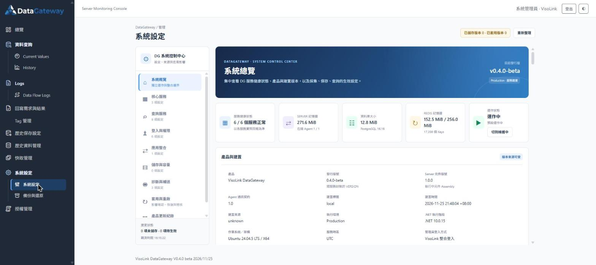

系統設定
系統設定中心集中查看 DG 服務狀態與目前設定；調整前可預覽影響，套用後以服務實際回報確認生效。
查看系統總覽

- 開啟「系統設定」，預設在「系統概覽」。
- 看「目前發行版」、服務健康狀態（例如 6 / 6 個服務正常）、Server 記憶體、資料庫大小、Redis 記憶體。
- 看「產品與建置」：發行版號、Agent 通訊契約、執行環境、管理員登入方式。
能確認 DG 版本與所有服務是否正常。
失敗時先查
- 服務健康狀態少於 6：到「核心服務」分類看哪個服務異常。
修改與套用設定
- 在左側選分類（核心服務、查詢服務、登入與權限、應用整合、儲存與容量、診斷與補送），或用「快速尋找設定」搜尋。
- 每個項目都標示生效方式：「線上套用」「需重新啟動容器」或「系統自動管理／部署管理」（唯讀）。展開「套用影響與設定來源」可看目前生效值與影響服務。
- 修改後按該分類的「儲存此分類」。
- 到「套用與重啟」確認差異與受影響的服務，再執行套用。
- 套用後看右上角「已儲存版本 · 已套用版本」與各服務回報，確認已生效。
已套用版本與已儲存版本相同，項目的「目前生效值」為新設定。
線上套用的項目立即生效；需重新啟動的項目只會重啟列出的服務。需要時可還原上次套用的設定。
失敗時先查
- 左下「變更狀態」顯示有項目待生效：還沒到「套用與重啟」完成套用。
切換管理員登入方式
- 要切換成「DG 本機帳號」前，先依 1.3 建立 DG 本機管理員。
- 要切換成「VisoLink 整合登入」前，先確認「VisoLink 登入 API URL」正確，並用「驗證 VisoLink 管理員登入」驗證一次（有效 5 分鐘）。
- 在「DG 管理員登入方式」選「DG 本機帳號」或「VisoLink 整合登入」，按「儲存此分類」並套用。
- 依提示重新登入。
登入頁的帳號欄位標題改為新的登入方式，可用新方式登入。
切換前務必確認新方式的帳號可以登入，否則只能用救援帳號恢復（1.2）。
失敗時先查
- VisoLink 登入 API URL 修改屬於「需重新啟動容器」，要完成套用才生效。
診斷追蹤與歷史補送
- 「DG 處理追蹤」：保留抽樣追蹤，協助定位接收、交接與寫入問題（需重新啟動容器）。
- 「歷史積壓資料補送」：選「允許補送」或「暫停補送」，線上套用，不會停止即時採集。
- 按「儲存此分類」後套用。
補送狀態依設定暫停或恢復；Agent Registry 的 BACKFILL 欄會反映。
失敗時先查
- 補送暫停太久會讓 Agent 暫存持續累積，記得恢復。
查看產品更新紀錄
- 在系統設定左側分類捲到最下方，點「產品更新紀錄」。
- 依版本查看新增功能、改善與問題修正。
可確認目前版本包含哪些功能。
失敗時先查
- 版本與預期不同：對照「系統概覽」的發行版號。